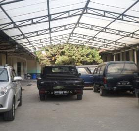

Teknik Kendaraan Ringan dan Otomotif
Jurusan Teknik Kendaraan Ringan dan Otomotif (TKRO) di SMKN 2 Yogyakarta merupakan ilmu yang mempelajari tentang alat-alat transportasi darat yang menggunakan mesin, terutama mobil yang mulai berkembang sebagai cabang ilmu sering diciptakannya mesin mobil.